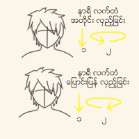

ေခါင္း ေလ့က်င့္ခန္း

ဦးေႏွာက္ႏွင့္ ဆိုင္တဲ့ ေရာဂါရွိသူေတြ၊ လည္ပင္းဆိုင္ရာ ျပႆနာရွိသူေတြ မျပဳလုပ္သင့္ပါ။
အဆင့္ ၃
ဒါေတြျပီးရင္ေတာ့ ေခါင္းကို နာရီလက္တံ အတိုင္း လွည့္ပါမယ္။
ေခါင္းကို ဦးစြာ ေအာက္ငံု႔ျပီး ထိုေနရာမွ စကာ ညာဘက္ ပခံုး၊ ျပီးရင္ ေခါင္းေမာ့၊ ဘယ္ဘက္ပခံုး ၊ ေခါင္းငံု႕လ်က္ အဆံုးသတ္ပါမယ္။
၃ၾကိမ္ေလာက္ လွည့္ျပီးရင္ နာရီလက္တံ ေျပာင္းျပန္ ျပန္လွည့္ပါ။